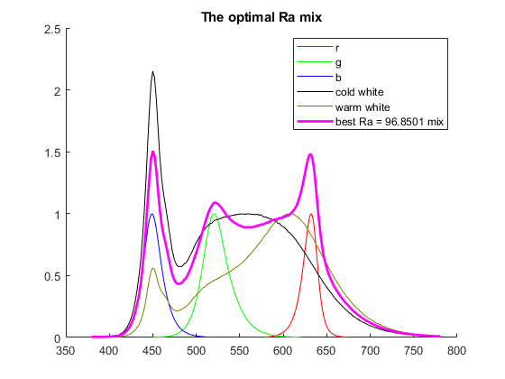
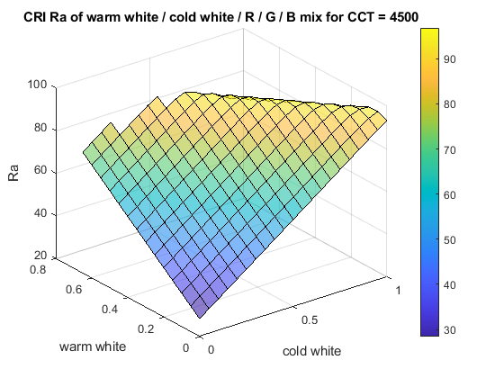
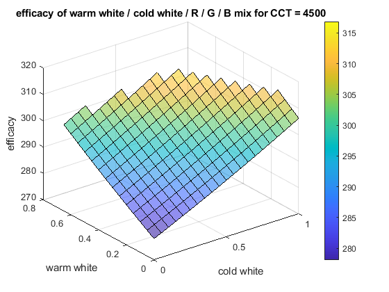

MatchAdditiveMix
Navigate to: Home | Alphabetic list | Grouped list | Source code: MatchAdditiveMix.m
Computes weights of three XYZ tristimuli to match a target XYZ tristimulus, with an optional fixed contribution
Contents
Syntax
[rv, Acond] = MatchAdditiveMix(XYZ1, XYZ2, XYZ3, XYZ_target, opts)
Input Arguments
- XYZ1, XYZ2, XYZ3: struct s with scalar double fields X, Y and Z: the three input tristimuli
- XYZ_target: struct with scalar double fields X, Y and Z: the target tristimulus
- opts: Name-Value pair: 'XYZ_fix', another struct with scalar double fields X, Y and Z: a fixed contribution, such that the sum of XYZ_fix and the weighted three XYZi tristimuli yield XYZ_target.
Output Arguments
- rv: (3,1) double column vector: the weights such that [XYZ1.X,XYZ2.X,XYZ3.X] * rv + XYZ_fixed.X == XYZ_target.X, likewise for Y and Z, within numerical accuracy.
- Acond: scalar double. The condition number of the 3x3 matrix of the equation system: diagnostic information
Algorithm
Sets up the 3x3 linear equation system, and solves it.
See also
AddWeightedSpectra, CIE1931_XYZ, MatchWhiteLEDSpectrum, OptimalAdditiveMix, XYZ_from_xyY
Usage Example
function ExampleMatchAdditiveMix() XYZ1 = struct('X', 1 , 'Y', 1, 'Z', 1 ); XYZ2 = struct('X', 1 , 'Y', 1, 'Z', 1.001 ); % very nearly the same, nearly singular, yields extreme weights XYZ3 = struct('X', 1, 'Y', 0.5, 'Z', 1.5 ); XYZ_target = struct('X', 2 , 'Y', 3, 'Z', 4 ); [rv, Acond] = MatchAdditiveMix(XYZ1, XYZ2, XYZ3, XYZ_target) % Read some LED spectra: red, greenm blue, cold white, warm white sr = ReadLightToolsSpectrumFile('LERTDUW_S2WP_red.sre'); sg = ReadLightToolsSpectrumFile('LERTDUW_S2WP_green.sre'); sb = ReadLightToolsSpectrumFile('LERTDUW_S2WP_blue.sre'); scw = ReadLightToolsSpectrumFile('LED_6498K.sre'); sww = ReadLightToolsSpectrumFile('LED_3000K.sre'); % compute their tristimulus values sr.XYZ = CIE1931_XYZ(sr); sg.XYZ = CIE1931_XYZ(sg); sb.XYZ = CIE1931_XYZ(sb); scw.XYZ = CIE1931_XYZ(scw); sww.XYZ = CIE1931_XYZ(sww); % define 4500K Planck as target pl = PlanckLocus(); T = 4500; xy_t = pl.xy_func(T); XYZ_t.Y = 100; colorweight = XYZ_t.Y / xy_t(2); XYZ_t.X = xy_t(1) * colorweight; XYZ_t.Z = (1 - sum(xy_t)) * colorweight; % compute R/G/B weights to achieve target by additive mixing % but with a given fixed setting of the cold white and warm white LEDs n = 21; w_cw = linspace(0,1,n); w_ww = linspace(0,1,n); bestRa = -Inf; maxdev = 0; for i_cw = 1:n for i_ww = 1:n XYZ_fix = XYZsum({scw.XYZ, sww.XYZ},[w_cw(i_cw), w_ww(i_ww)]); res = MatchAdditiveMix(sr.XYZ, sg.XYZ, sb.XYZ, XYZ_t, 'XYZ_fix', XYZ_fix); if min(res) < 0 Ra(i_cw, i_ww) = NaN; R9(i_cw, i_ww) = NaN; efficacy(i_cw, i_ww) = NaN; else sumspec = AddWeightedSpectra({sr, sg, sb, scw, sww},[res(1), res(2), res(3), w_cw(i_cw), w_ww(i_ww)]); cri = CRI(); Ra(i_cw, i_ww) = cri.Ra(sumspec); if Ra(i_cw, i_ww) > bestRa bestRa = Ra(i_cw, i_ww); bestSpec = sumspec; end R9(i_cw, i_ww) = cri.SingleRi(sumspec,9); ssXYZ = CIE1931_XYZ(sumspec); test = norm([ssXYZ.x, ssXYZ.y] - xy_t); if test > maxdev maxdev = test; end efficacy(i_cw, i_ww) = ssXYZ.Y * 683 / IntegrateSpectrum(sumspec); end end end figure(1); clf; hold on; plot(sr.lam, sr.val, 'r'); plot(sg.lam, sg.val, 'g'); plot(sb.lam, sb.val, 'b'); plot(scw.lam, scw.val, 'k'); plot(sww.lam, sww.val, 'Color',[0.5,0.5,0]); plot(bestSpec.lam, bestSpec.val, 'm','LineWidth',2); legend({'r','g','b','cold white','warm white',sprintf('best Ra = %g mix',bestRa)}); title('The optimal Ra mix'); figure(2); surf(w_cw, w_ww,Ra,'FaceAlpha',0.6); xlabel('cold white'); ylabel('warm white'); zlabel('Ra'); title(sprintf('CRI Ra of warm white / cold white / R / G / B mix for CCT = %g',T)); colorbar; figure(3); surf(w_cw, w_ww,R9,'FaceAlpha',0.6); xlabel('cold white'); ylabel('warm white'); zlabel('R9'); title(sprintf('CRI R9 of warm white / cold white / R / G / B mix for CCT = %g',T)); colorbar; figure(4); surf(w_cw, w_ww,efficacy,'FaceAlpha',0.6); xlabel('cold white'); ylabel('warm white'); zlabel('efficacy'); title(sprintf('efficacy of warm white / cold white / R / G / B mix for CCT = %g',T)); colorbar; fprintf('max. dev. xy = %g\n', maxdev); end function rv = XYZsum(XYZ, w) nn = length(XYZ); X = 0; Y = 0; Z = 0; for i = 1:nn iXYZ = XYZ{i}; X = X + w(i) * iXYZ.X; Y = Y + w(i) * iXYZ.Y; Z = Z + w(i) * iXYZ.Z; end rv = struct('X', X , 'Y', Y, 'Z', Z ); end
rv =
1.0e+03 *
-2.9960
3.0000
-0.0020
Acond =
1.0490e+04
max. dev. xy = 1.54984e-05
  